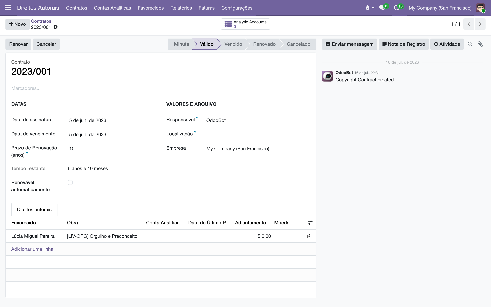

Contratos de direitos autorais
Registre os contratos da editora com autores, tradutores e ilustradores: quem recebe, por qual obra, com que percentual por faixa de exemplares — e deixe o sistema vigiar vencimentos e renovações.
Visão geral
Este é o módulo base da suíte de direitos autorais do Liber. Ele registra os termos de cada contrato: os favorecidos (autores, tradutores, ilustradores…), as obras (os livros do catálogo), as faixas de exemplares com o percentual de royalty de cada uma e os adiantamentos pagos. Ele também acompanha a vida do contrato — assinatura, vencimento, renovação (manual ou automática) e cancelamento — com lembretes para o responsável.
Sozinho, ele não calcula nada: quem transforma os termos em números são os módulos satélites, instalados por cima conforme a necessidade.
| Módulo | O que acrescenta |
|---|---|
| Contratos de direitos autorais (este) | O contrato em si: favorecidos, obras, faixas, adiantamentos, vigência. |
| Cálculo de royalties | Apura os royalties a partir das vendas pagas, obra por obra. |
| Pagamento de royalties | Gera as faturas de fornecedor que pagam os autores. |
| Prestação de contas | O extrato do autor em PDF, para imprimir ou enviar por e-mail. |
| IRRF sobre direitos | Retém o imposto de renda na fonte sobre cada pagamento. |
Tudo fica no aplicativo Direitos Autorais do menu principal. Com o módulo base instalado, ele traz apenas e ; os demais menus aparecem conforme os satélites são instalados.
Configuração
Grupos de acesso
O módulo cria dois grupos, na categoria Direitos Autorais do cadastro de usuários ():
| Grupo | Pode |
|---|---|
| Usuário | Ver e editar contratos, favorecidos e obras; emitir prestações de contas. |
| Administrador | Tudo do Usuário, mais: os menus de Configurações, contas analíticas, relatórios e faturas dos módulos satélites, e a edição manual da Data do Último Pagamento de uma linha de royalty. |
Lembrete de vencimento
- Acesse (ou ).
- Na seção Contratos, ajuste Janela de lembrete de vencimento — quantos dias antes do vencimento o sistema cria uma atividade de lembrete para o responsável pelo contrato. O padrão é 45 dias.
- Clique em Salvar. O valor vale para toda a base, independentemente da empresa.
Criar um contrato
- Acesse e clique em Novo.
- O campo Número mostra Novo — a numeração é automática e será atribuída ao salvar.
- Preencha a Data de assinatura e a Data de vencimento. Ao informar as duas, o sistema sugere o Prazo de Renovação (anos) a partir do intervalo entre elas — a sugestão só acontece enquanto você edita; depois de definido, o prazo fica fixo e cada renovação estende o vencimento pelo mesmo período.
- Marque Renovável automaticamente se o contrato deve se renovar sozinho ao vencer (veja o ciclo de vida).
- Em Responsável, indique quem acompanha o contrato — é essa pessoa que recebe os lembretes de vencimento.
- Use Localização para guardar o link ou o local de arquivamento do contrato assinado (uma URL do Drive, uma pasta física…).
- Classifique com Marcadores, se quiser — marcadores coloridos criados livremente, úteis para filtrar e agrupar a lista.
- Salve. O contrato nasce como Minuta.

Linhas de royalty e faixas de exemplares
Na aba Direitos autorais do contrato, cada linha representa um par favorecido × obra: quem recebe, por qual livro.
- Clique em Adicionar linha na aba Direitos autorais.
- Escolha o Favorecido (o contato do autor, tradutor ou ilustrador) e a Obra (o produto do livro).
- Se houve adiantamento, informe o Adiantamento Descontável — o valor já pago que será recuperado dos royalties que a obra gerar — e/ou o Adiantamento Não-Descontável, que é apenas registrado.
- Em Faixas de exemplares, adicione uma linha por faixa: De (exemplares), Até (exemplares) e Percentual (%). Deixe Até (exemplares) em 0 na última faixa para indicar "sem limite superior".
- Salve a linha e repita para cada par favorecido × obra do contrato.
Um contrato típico de autor: 8% até 3.000 exemplares, 10% de 3.001 a 10.000 e 12% daí em diante.
| De (exemplares) | Até (exemplares) | Percentual (%) |
|---|---|---|
| 0 | 3.000 | 8,00 |
| 3.001 | 10.000 | 10,00 |
| 10.001 | 0 (sem limite) | 12,00 |
A faixa é escolhida pela quantidade acumulada de exemplares vendidos da obra — o detalhe está no manual de Cálculo de royalties.
O sistema impede duas coisas aqui: repetir o mesmo par favorecido × obra dentro de um contrato (cada combinação só pode ter uma linha) e cadastrar uma faixa cuja quantidade final seja menor que a inicial.
Os campos Favorecidos e Obras do contrato são calculados automaticamente a partir das linhas — são eles que aparecem na lista e nos filtros.
Validar, renovar, cancelar
A barra de situação do contrato passa por Minuta, Válido, Vencido, Renovado e Cancelado:
- Com os termos conferidos, clique em Validar — o contrato passa a Válido e entra em vigor.
- Para estender o prazo manualmente, clique em Renovar: o vencimento avança pelo Prazo de Renovação (anos) e a situação vira Renovado, com o registro "Contrato renovado até…" no histórico de mensagens.
- Cancelar encerra o contrato em qualquer ponto. Um contrato cancelado não cobre venda nenhuma para efeito de royalties.
Uma rotina automática roda todos os dias e cuida do resto:
- Contratos vencidos e não renováveis passam a Vencido.
- Contratos vencidos marcados como Renovável automaticamente são renovados sozinhos: o vencimento avança pelo prazo de renovação quantas vezes for preciso para voltar a vigorar, a situação vira Renovado e o histórico registra "Renovado automaticamente até…". Marcar um contrato já Vencido como renovável faz a rotina do dia seguinte trazê-lo de volta.
- Para os contratos que vencem dentro da janela configurada, a rotina cria uma atividade A Fazer ("Contrato vencendo em breve") para o Responsável — uma só por contrato, sem duplicar em dias seguidos.
A lista de contratos tem o filtro Vencendo (3 meses) e a visão de calendário mostra cada contrato no dia do seu vencimento — dois jeitos rápidos de enxergar o que precisa de atenção.
Reatribuir o responsável em lote
- Em , marque os contratos desejados na lista.
- No menu Ação (a engrenagem), escolha Reatribuir Responsável.
- Escolha o Novo Responsável e clique em Reatribuir — todos os contratos selecionados passam para ele, e os próximos lembretes também.
O contrato visto do contato e do livro
No cadastro do contato e no cadastro do produto há um botão inteligente Contratos com a contagem de contratos em que aquele contato é favorecido (ou aquele produto é obra), além de uma aba listando esses contratos com situação e datas. O botão só aparece quando existe pelo menos um contrato.

Perguntas frequentes
Salvei o contrato e o número continua "Novo". O número definitivo é atribuído no primeiro salvamento; se aparecer "Novo" depois de salvar, a sequência de numeração foi removida — chame quem administra o sistema.
Mudei as datas e o prazo de renovação não acompanhou. É o comportamento esperado depois que o prazo já foi definido: a sugestão automática só acontece na criação. Ajuste o Prazo de Renovação (anos) à mão se o novo período for outro.
Posso apagar uma linha de royalty? Pode, mas se os módulos de cálculo já lançaram valores na conta analítica dela, prefira manter a linha e tratar a mudança por aditivo (novo contrato ou nova linha) — apagar a linha remove também os lançamentos vinculados a ela.
O que o campo Tempo restante mostra? Os dias (ou anos e meses) até o vencimento. Contratos cancelados ou já marcados como vencidos aparecem sem valor.
- Cálculo de royalties — apurar os royalties das vendas pagas.
- Pagamento de royalties — gerar as faturas que pagam os autores.
- IRRF sobre direitos — a retenção do imposto na fonte.
- Prestação de contas — o extrato do autor em PDF.